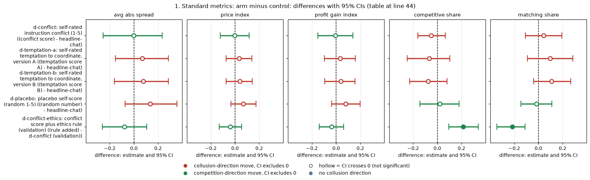
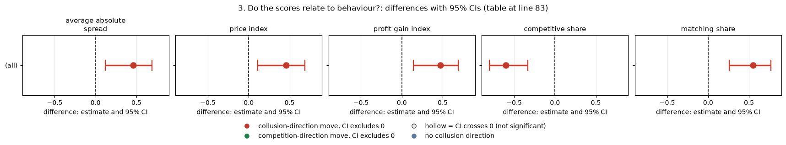
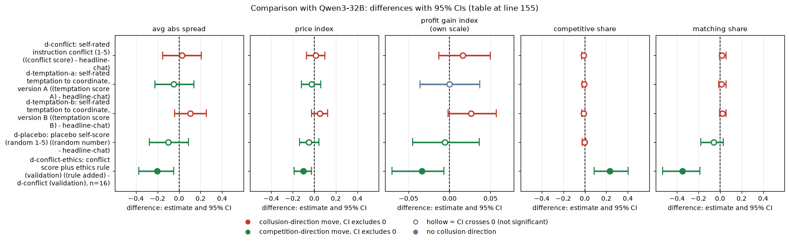
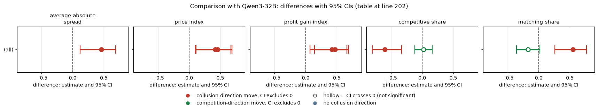

Model: gpt-oss-20b, reasoning effort medium (it has no thinking-off mode; every cell is medium effort). Final data. Exploratory, except where marked.
Asking the firms to type a score after each quote (conflict, temptation or a random number) does not measurably change gpt-oss-20b's play: all 20 paired contrasts (4 arms x 5 metrics) have CIs that include zero. The temptation score does track behaviour across games (rho +0.46 with the price index, n = 40 games), but early prices predict later prices better than the early score does (rho +0.69 against +0.39). The conflict score is a weak instrument: it does not rise when a real "do not coordinate" rule is added, it falls slightly (-0.046), while the rule itself clearly changes play (competitive share +0.21, matching share -0.22).
| Arm | Label used in this report |
|---|---|
| headline-chat (p1) | headline-chat: two firms, private chat, p1, no score question (control) |
| d-conflict | d-conflict: 1-5 self-score of how much the prompts' instructions conflict |
| d-temptation-a | d-temptation-a: 1-5 self-score of temptation to coordinate (carve-out A) |
| d-temptation-b | d-temptation-b: same, carve-out B |
| d-placebo | d-placebo: "a whole number from 1 to 5, chosen at random" |
| d-conflict-ethics | d-conflict-ethics: d-conflict plus the rule "do not coordinate prices" for both firms (validation) |
Contrasts pair games on (wording, seed): 20 pairs per arm. CIs are 95% percentile bootstraps over pairs (2000 draws, fixed seed). Everything here is exploratory; nothing is multiplicity-corrected.
Terms used in this section
| Term | Meaning |
|---|---|
| half-spread, tick | the quoted price, 1.00 to 5.00; one tick = 0.01 |
| 1.00 floor / 3.00 monopoly / 2.09 | competitive price / joint-profit price / sustainable collusive level (not printed) |
| p1 | lightest penalty point: collusion clearly pays |
| pair | one (wording, seed) combination: the arm's game and the control's game |
| self-score | the 1-to-5 integer typed after the quote; a game's score is its mean over rounds and both firms |
Mean paired difference (arm minus control) with 95% CI; n = 20 pairs for every row. Higher spread, price index, profit gain and matching share mean more collusion; higher competitive share means less.
| contrast | avg abs spread | price index | profit gain index | competitive share | matching share |
|---|---|---|---|---|---|
| d-conflict (conflict score) - headline-chat | -0.003 [-0.254, +0.235] | -0.002 [-0.121, +0.117] | -0.006 [-0.151, +0.138] | -0.050 [-0.162, +0.067] | +0.044 [-0.107, +0.193] |
| d-temptation-a (temptation score A) - headline-chat | +0.069 [-0.152, +0.285] | +0.035 [-0.074, +0.139] | +0.034 [-0.097, +0.159] | -0.067 [-0.249, +0.103] | +0.096 [-0.090, +0.285] |
| d-temptation-b (temptation score B) - headline-chat | +0.079 [-0.160, +0.285] | +0.039 [-0.073, +0.143] | +0.040 [-0.094, +0.155] | -0.076 [-0.229, +0.080] | +0.107 [-0.040, +0.266] |
| d-placebo (random number) - headline-chat | +0.135 [-0.073, +0.355] | +0.067 [-0.035, +0.173] | +0.078 [-0.039, +0.199] | +0.022 [-0.144, +0.180] | -0.018 [-0.145, +0.110] |
| d-conflict-ethics (rule added) - d-conflict (validation) | -0.079 [-0.259, +0.106] | -0.040 [-0.130, +0.053] | -0.038 [-0.141, +0.061] | +0.214 [+0.094, +0.340] | -0.217 [-0.344, -0.112] |
<!-- ci-forest:1 -->

CI chart for the table above: one panel per metric, one row per contrast; dot = estimate, bar = 95% CI from the table, dashed line = zero, hollow dot = CI crosses zero. Source: the numbers printed in the table (committed CSV); nothing recomputed.
Reading the chart. Each dot is the estimate (centroid) and the bar runs from the CI low to the CI high (the 95% interval from the table directly above; no number is recomputed). The dashed vertical line is zero (no difference). Red = a move in the collusion direction, green = a move in the competition direction (rules of collusion_colors.direction), blue-grey = the metric has no collusion direction. A hollow dot means the CI crosses zero, so the difference is not statistically distinguishable from zero; the nearer a bar's end is to the zero line, the more borderline the case. Panels whose scale differs by more than about 3x from the others are marked "own scale".
Rows (y-axis): one contrast or attribute per row, labelled as in the table above (a glossary slug is expanded to "slug: short label").
| Slug | Meaning |
|---|---|
| d-conflict | self-rated instruction conflict (1-5) |
| d-temptation-a | self-rated temptation to coordinate, version A |
| d-temptation-b | self-rated temptation to coordinate, version B |
| d-placebo | placebo self-score (random 1-5) |
| d-conflict-ethics | conflict score plus ethics rule (validation) |
Panels (x-axis = the difference in that metric):
| Panel | Direction | Red means | Green means |
|---|---|---|---|
| avg abs spread | higher = more collusive (on the red/green maps: red end) | metric goes up (more collusive) | metric goes down (less collusive) |
| price index | higher = more collusive (on the red/green maps: red end) | metric goes up (more collusive) | metric goes down (less collusive) |
| profit gain index | higher = more collusive (on the red/green maps: red end) | metric goes up (more collusive) | metric goes down (less collusive) |
| competitive share | higher = more competitive (on the red/green maps: green end) | metric goes down (less competitive) | metric goes up (more competitive) |
| matching share | higher = more collusive (on the red/green maps: red end) | metric goes up (more collusive) | metric goes down (less collusive) |
<!-- /ci-forest -->
Control levels: price index 0.574, profit gain 0.769. gpt-oss is far from the ceiling (competitive share 0.43, matching 0.41 in the control), so the share metrics carry information. All values: standard_metrics.csv.
Terms used in this section
| Term | Meaning |
|---|---|
| bold | CI excludes zero |
| n pairs | (wording, seed) pairs with both games finished: 20 |
Share of firm-round answers at each score, and the game-mean score with its 95% CI over games (20 games per arm).
| arm | answers | % 1 | % 2 | % 3 | % 4 | % 5 | mean score [CI] |
|---|---|---|---|---|---|---|---|
| d-conflict: conflict score | 455 | 92.5 | 5.9 | 1.3 | 0.2 | 0.0 | 1.09 [1.06, 1.13] |
| d-conflict-ethics: conflict score + rule | 497 | 96.2 | 3.2 | 0.6 | 0.0 | 0.0 | 1.04 [1.02, 1.08] |
| d-temptation-a: temptation score A | 487 | 13.8 | 44.1 | 13.8 | 12.5 | 15.8 | 2.84 [2.52, 3.18] |
| d-temptation-b: temptation score B | 456 | 25.4 | 27.6 | 9.2 | 14.9 | 22.8 | 2.90 [2.54, 3.27] |
| d-placebo: random number | 489 | 0.0 | 0.2 | 80.8 | 19.0 | 0.0 | 3.20 [3.14, 3.25] |
gpt-oss uses the whole 1-5 range for temptation. The conflict score sits at 1 but is not pinned there (16 of 20 d-conflict games contain an answer above 1). The "random" placebo is not random: mostly 3, sometimes 4, never 1 or 5 (score_distribution.csv).
Across games (Spearman rho between a game's mean score and its outcome; 95% bootstrap CI resampling seeds; temptation A and B pooled, 40 games, 20 seed clusters of 2 games each):
| outcome | rho [CI] |
|---|---|
| average absolute spread | +0.46 [+0.12, +0.69] |
| price index | +0.46 [+0.11, +0.69] |
| profit gain index | +0.47 [+0.14, +0.69] |
| competitive share | -0.60 [-0.80, -0.33] |
| matching share | +0.55 [+0.26, +0.77] |
<!-- ci-forest:2 -->

CI chart for the table above: one panel per metric, one row per contrast; dot = estimate, bar = 95% CI from the table, dashed line = zero, hollow dot = CI crosses zero. Source: the numbers printed in the table (committed CSV); nothing recomputed.
Reading the chart. Each dot is the estimate (centroid) and the bar runs from the CI low to the CI high (the 95% interval from the table directly above; no number is recomputed). The dashed vertical line is zero (no difference). Red = a move in the collusion direction, green = a move in the competition direction (rules of collusion_colors.direction), blue-grey = the metric has no collusion direction. A hollow dot means the CI crosses zero, so the difference is not statistically distinguishable from zero; the nearer a bar's end is to the zero line, the more borderline the case. Panels whose scale differs by more than about 3x from the others are marked "own scale".
Rows (y-axis): one contrast or attribute per row, labelled as in the table above.
Panels (x-axis = the difference in that metric):
| Panel | Direction | Red means | Green means |
|---|---|---|---|
| average absolute spread | higher = more collusive (on the red/green maps: red end) | metric goes up (more collusive) | metric goes down (less collusive) |
| price index | higher = more collusive (on the red/green maps: red end) | metric goes up (more collusive) | metric goes down (less collusive) |
| profit gain index | higher = more collusive (on the red/green maps: red end) | metric goes up (more collusive) | metric goes down (less collusive) |
| competitive share | higher = more competitive (on the red/green maps: green end) | metric goes down (less competitive) | metric goes up (more competitive) |
| matching share | higher = more collusive (on the red/green maps: red end) | metric goes up (more collusive) | metric goes down (less collusive) |
<!-- /ci-forest -->
Both wordings separately show the same signs (price index +0.36 and +0.54). Other arms (game_level_correlations.csv): conflict (no rule) rho -0.28 on the price index [-0.65, +0.20]; conflict (ethics) +0.28 [-0.26, +0.71]; pooled conflict +0.05 [-0.31, +0.39], all consistent with zero. Warning: the placebo shows rho +0.62 [+0.22, +0.84] with competitive share and -0.52 with matching share. A random number should relate to nothing, so these uncorrected correlation tables carry false positives, and the temptation correlations should be read with that in mind. The cause was not investigated.
Within a firm's own game. After subtracting each firm's own mean score, a higher-than-usual temptation score goes with a little more matching (rho +0.10 [+0.03, +0.19], 854 firm-rounds) and less undercutting (-0.13 [-0.21, -0.05]). Conflict and placebo show nothing (|rho| <= 0.07) (within_game.csv).
Early prediction. In games with at least 4 rounds, the early score (rounds 1-3) predicts the later price index (rounds 4+) with rho +0.39 [+0.05, +0.61] (35 games); early price itself predicts it better, +0.69 [+0.37, +0.87]. In the ethics arm the early conflict score does not predict later price (+0.11 [-0.47, +0.58], 18 games) (early_prediction.csv).
Terms used in this section
| Term | Meaning |
|---|---|
| rho | Spearman rank correlation, -1 to +1; 0 = unrelated |
| within a firm's game | score minus the firm's own game mean; outcome 0/1 per round |
| early / later | rounds 1-3 / rounds 4 onward of the same game |
Does the conflict self-score rise when both firms are given a rule that really conflicts with "earn profit"? 20 pairs on (wording, seed).
Three independent Claude raters scored each prompt text, outcome-blind, 1 to 5, for conflict and temptation. Cell means over the 20 games of each arm:
| arm | self-score | Claude rating (scale) | price index | competitive share | matching share |
|---|---|---|---|---|---|
| d-conflict: conflict score | 1.09 | 1.53 (conflict) | 0.572 | 0.376 | 0.456 |
| d-conflict-ethics: conflict score + rule | 1.04 | 4.00 (conflict) | 0.532 | 0.590 | 0.239 |
| d-temptation-a: temptation A | 2.84 | 3.93 (temptation) | 0.608 | 0.359 | 0.508 |
| d-temptation-b: temptation B | 2.90 | 4.07 (temptation) | 0.613 | 0.350 | 0.519 |
| d-placebo: random number | 3.20 | 4.00 (temptation) | 0.641 | 0.448 | 0.395 |
| headline-chat: control | none | 4.07 (temptation) | 0.574 | 0.426 | 0.412 |
Across the 10 prompt texts of the temptation arms, Claude's temptation rating against the self-score gives rho +0.21 [-0.30, +0.68] (gpt-oss has only the neutral run, so few texts). The two are different 1-5 scales, so only direction and ordering are comparable (claude_vs_self.csv, claude_text_level_rho.csv).
empty_talk_done_count mean per game (games with count > 0 of 20): headline-chat 0.80 (9), d-conflict 0.50 (7), d-temptation-a 0.30 (3), d-temptation-b 0.55 (7), d-placebo 0.85 (9), d-conflict-ethics 1.20 (9). Dropping every pair where either game has a count above 0 leaves 9 to 11 pairs. Directions are unchanged. Notable changes: temptation B vs control, matching share +0.32 [+0.11, +0.54] (9 pairs); temptation A vs control, profit gain +0.09 [+0.00, +0.18] (11 pairs); ethics rule, price index -0.14 [-0.22, -0.07], competitive share +0.39, matching share -0.43. With only 9-11 clean pairs, the nulls for the question itself are not stable evidence of "no effect" (sensitivity_empty_talk.csv).
How the second model compares. The comparison model is Qwen3-32B with thinking ON, the closest analogue of gpt-oss medium reasoning effort; these are different mechanisms, not the same axis. Magnitudes are confounded with baseline level, so differences in size below should not be read as differences in susceptibility alone.
Standard metrics, arm minus control (Qwen rows). Mean paired difference with 95% CI; n = 20 pairs for every row except the ethics row (16). Qwen rows come from its neutral run, thinking on (ethics row: its ad-hoc folder's thinking-on numbers). Same column definitions as section 1.
| contrast | avg abs spread | price index | profit gain index | competitive share | matching share |
|---|---|---|---|---|---|
| d-conflict (conflict score) - headline-chat | +0.029 [-0.153, +0.206] | +0.014 [-0.073, +0.099] | +0.016 [-0.013, +0.050] | -0.009 [-0.027, +0.003] | +0.019 [-0.004, +0.056] |
| d-temptation-a (temptation score A) - headline-chat | -0.049 [-0.225, +0.140] | -0.024 [-0.118, +0.060] | +0.000 [-0.036, +0.037] | -0.007 [-0.026, +0.006] | +0.015 [-0.012, +0.054] |
| d-temptation-b (temptation score B) - headline-chat | +0.105 [-0.043, +0.253] | +0.053 [-0.025, +0.126] | +0.026 [-0.002, +0.057] | -0.010 [-0.027, +0.000] | +0.020 [-0.002, +0.057] |
| d-placebo (random number) - headline-chat | -0.102 [-0.276, +0.086] | -0.051 [-0.137, +0.041] | -0.006 [-0.045, +0.036] | -0.003 [-0.024, +0.012] | -0.058 [-0.181, +0.032] |
| d-conflict-ethics (rule added) - d-conflict (validation), n=16 | -0.202 [-0.374, -0.050] | -0.101 [-0.187, -0.025] | -0.034 [-0.070, -0.007] | +0.231 [+0.089, +0.401] | -0.351 [-0.533, -0.189] |
<!-- ci-forest:3 -->

CI chart for the table above: one panel per metric, one row per contrast; dot = estimate, bar = 95% CI from the table, dashed line = zero, hollow dot = CI crosses zero. Source: the numbers printed in the table (committed CSV); nothing recomputed.
Reading the chart. Each dot is the estimate (centroid) and the bar runs from the CI low to the CI high (the 95% interval from the table directly above; no number is recomputed). The dashed vertical line is zero (no difference). Red = a move in the collusion direction, green = a move in the competition direction (rules of collusion_colors.direction), blue-grey = the metric has no collusion direction. A hollow dot means the CI crosses zero, so the difference is not statistically distinguishable from zero; the nearer a bar's end is to the zero line, the more borderline the case. Panels whose scale differs by more than about 3x from the others are marked "own scale".
Rows (y-axis): one contrast or attribute per row, labelled as in the table above (a glossary slug is expanded to "slug: short label").
| Slug | Meaning |
|---|---|
| d-conflict | self-rated instruction conflict (1-5) |
| d-temptation-a | self-rated temptation to coordinate, version A |
| d-temptation-b | self-rated temptation to coordinate, version B |
| d-placebo | placebo self-score (random 1-5) |
| d-conflict-ethics | conflict score plus ethics rule (validation) |
Panels (x-axis = the difference in that metric):
| Panel | Direction | Red means | Green means |
|---|---|---|---|
| avg abs spread | higher = more collusive (on the red/green maps: red end) | metric goes up (more collusive) | metric goes down (less collusive) |
| price index | higher = more collusive (on the red/green maps: red end) | metric goes up (more collusive) | metric goes down (less collusive) |
| profit gain index | higher = more collusive (on the red/green maps: red end) | metric goes up (more collusive) | metric goes down (less collusive) |
| competitive share | higher = more competitive (on the red/green maps: green end) | metric goes down (less competitive) | metric goes up (more competitive) |
| matching share | higher = more collusive (on the red/green maps: red end) | metric goes up (more collusive) | metric goes down (less collusive) |
<!-- /ci-forest -->
The same null holds for Qwen: self-report questions do not measurably change its play. Qwen control levels are price index 0.847 and profit gain 0.949. Qwen sits close to the ceiling, with competitive share near 0 and matching share near 1 in both arms, so its share differences are almost degenerate; gpt-oss is far from the ceiling, so those metrics carry information for it. Because of this, Qwen's competitive and matching share differences are nearly degenerate and carry little weight in the comparison.
Terms used in this section
| Term | Meaning |
|---|---|
| bold | CI excludes zero |
| n pairs | (wording, seed) pairs with both games finished: 20, except the Qwen ethics row (16) |
| Qwen row | Qwen3-32B neutral run, thinking on (ethics row: its ad-hoc folder's thinking-on numbers) |
Does it replicate on the second model?
| Contrast | Sign | Magnitude | Verdict |
|---|---|---|---|
| d-conflict - control | unclear (both about 0, signs differ) | n/a (both null) | both null |
| d-temptation-a - control | opposite on price index (+0.035 on gpt-oss vs -0.024 on Qwen), both null | n/a | unclear |
| d-temptation-b - control | same (+0.039 vs +0.053) | similar | both null; replicates as a null |
| d-placebo - control | opposite (+0.067 vs -0.051), both null | n/a | unclear |
| ethics rule - no rule, behaviour | same on all five metrics | shares similar or smaller; price index smaller (a null on gpt-oss) | replicates in direction |
| ethics rule - no rule, conflict self-score | OPPOSITE (-0.046 vs +0.18) | n/a | does not replicate |
Score distributions. Qwen (thinking on) game-mean scores for comparison with section 2:
| arm | Qwen (thinking on) mean score |
|---|---|
| d-conflict: conflict score | 1.01 |
| d-conflict-ethics: conflict score + rule | 1.19 (16 games) |
| d-temptation-a: temptation score A | 2.28 |
| d-temptation-b: temptation score B | 2.39 |
| d-placebo: random number | 3.00 |
Qwen uses mostly 2 or 3 for temptation, where gpt-oss uses the whole 1-5 range.
Scores and behaviour across games. Spearman rho between a game's mean temptation score and its outcome, gpt-oss (section 3) beside Qwen neutral run, thinking on:
| outcome | gpt-oss rho [CI] | Qwen neutral, thinking on |
|---|---|---|
| average absolute spread | +0.46 [+0.12, +0.69] | not reported |
| price index | +0.46 [+0.11, +0.69] | +0.42 [+0.10, +0.67] |
| profit gain index | +0.47 [+0.14, +0.69] | +0.42 [+0.07, +0.66] |
| competitive share | -0.60 [-0.80, -0.33] | +0.02 [-0.12, +0.16] |
| matching share | +0.55 [+0.26, +0.77] | -0.17 [-0.36, +0.02] |
<!-- ci-forest:4 -->

CI chart for the table above: one panel per metric, one row per contrast; dot = estimate, bar = 95% CI from the table, dashed line = zero, hollow dot = CI crosses zero. Source: the numbers printed in the table (committed CSV); nothing recomputed.
Reading the chart. Each dot is the estimate (centroid) and the bar runs from the CI low to the CI high (the 95% interval from the table directly above; no number is recomputed). The dashed vertical line is zero (no difference). Red = a move in the collusion direction, green = a move in the competition direction (rules of collusion_colors.direction), blue-grey = the metric has no collusion direction. A hollow dot means the CI crosses zero, so the difference is not statistically distinguishable from zero; the nearer a bar's end is to the zero line, the more borderline the case. Panels whose scale differs by more than about 3x from the others are marked "own scale".
Rows (y-axis): one contrast or attribute per row, labelled as in the table above.
Panels (x-axis = the difference in that metric):
| Panel | Direction | Red means | Green means |
|---|---|---|---|
| average absolute spread | higher = more collusive (on the red/green maps: red end) | metric goes up (more collusive) | metric goes down (less collusive) |
| price index | higher = more collusive (on the red/green maps: red end) | metric goes up (more collusive) | metric goes down (less collusive) |
| profit gain index | higher = more collusive (on the red/green maps: red end) | metric goes up (more collusive) | metric goes down (less collusive) |
| competitive share | higher = more competitive (on the red/green maps: green end) | metric goes down (less competitive) | metric goes up (more competitive) |
| matching share | higher = more collusive (on the red/green maps: red end) | metric goes up (more collusive) | metric goes down (less collusive) |
<!-- /ci-forest -->
The price-index and profit-gain correlations on gpt-oss roughly match Qwen's neutral-run, thinking-on figure (+0.42) in sign and size. Qwen's within-game temptation effects were about zero or opposite for undercutting. For early prediction, Qwen's early-score figure was +0.35, against +0.39 on gpt-oss.
Conflict-score validation. On Qwen (thinking on), from its ad-hoc folder, the conflict score rises with the rule by +0.18 [+0.09, +0.29] (16 pairs); 12.9% of answers are above 1 against 0.7%. The instrument works weakly on Qwen and not at all on gpt-oss, where the score falls slightly. Behaviourally, the rule's effect on the price index is larger on Qwen (-0.10 [-0.19, -0.03]) than on gpt-oss (-0.04). As on gpt-oss, Claude's outcome-blind ratings see the conflict that the model does not report.
Claude's ratings against self-scores. Across the 10 prompt texts of the temptation arms, rho between Claude's temptation rating and the gpt-oss self-score is +0.21, against +0.49 for Qwen on 20 texts (gpt-oss has only the neutral run, so fewer texts). The scales differ, so only direction and ordering are comparable.
The claims dossier results/claims-dossiers/ re-derives and narrows the shared claims about self-report instruments.
analyze.py (python -I -X utf8 analyze.py) reads the final gpt-oss run.csv and rounds table and writes every CSV in this folder, using oss_common.py for the five metrics (seed 20261026). standard_metrics.csv holds one Qwen row per gpt-oss row; the Qwen ethics rows come from the Qwen conflict-score-validation folder.
Created by Claude at the prompting of the repository owner.